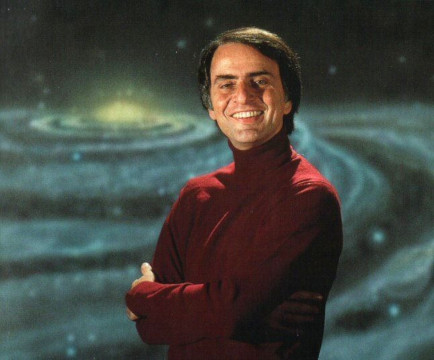
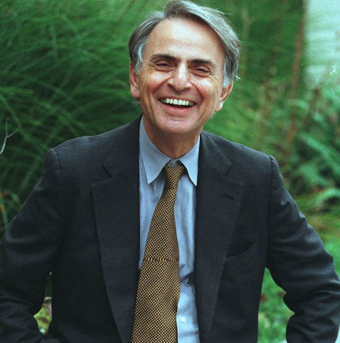

Primeiros Anos e Educação
Carl Edward Sagan nasceu em 9 de novembro de 1934, no Brooklyn, Nova York. Filho de pais judeus, Rachel Molly Gruber e Samuel Sagan, Carl desde cedo mostrou um interesse insaciável pelo universo. Aos cinco anos, ele visitou a Feira Mundial de Nova York de 1939, onde seu fascínio pelo futuro e pela ciência foi ainda mais estimulado. Esse interesse o levou a ler avidamente livros sobre estrelas, planetas e astronomia. Sagan frequentou a Universidade de Chicago, onde obteve um bacharelado em artes com especialização em física em 1955. Continuou seus estudos na mesma universidade, recebendo um mestrado em 1956 e, finalmente, um doutorado em astronomia e astrofísica em 1960. Durante seu tempo na Universidade de Chicago, Sagan estudou sob a orientação de alguns dos maiores cientistas da época, incluindo o famoso astrônomo Gerard Kuiper.
Carreira e Contribuições Científicas
Trabalho Acadêmico
Após completar seus estudos, Carl Sagan iniciou sua carreira acadêmica na Universidade de Harvard, onde trabalhou como pesquisador e lecionou. Posteriormente, ele se mudou para a Universidade Cornell, onde se tornou professor e, eventualmente, o diretor do Laboratório de Estudos Planetários. Foi em Cornell que Sagan passou grande parte de sua carreira, influenciando gerações de estudantes com seu entusiasmo e conhecimento sobre o cosmos.
Exploração Espacial
Uma das áreas mais notáveis da carreira de Sagan foi sua colaboração com a NASA. Ele desempenhou um papel crucial nas missões Mariner, Viking, Voyager e Galileo, que exploraram Marte, Júpiter, Saturno e além. Sagan foi um dos primeiros cientistas a sugerir que Marte poderia ter abrigado vida microbiana, uma ideia que continua a ser explorada nas missões atuais ao Planeta Vermelho. Além disso, Sagan esteve profundamente envolvido na criação das mensagens interestelares enviadas a bordo das sondas Pioneer e Voyager. Esses "Discos de Ouro" contêm sons e imagens selecionados para retratar a diversidade da vida e da cultura na Terra, destinados a qualquer forma de vida extraterrestre que possa encontrar essas sondas no futuro.
Projeto SETI
Sagan foi um dos cofundadores do SETI (Search for Extraterrestrial Intelligence), um projeto dedicado à busca de sinais de vida inteligente fora da Terra. Ele acreditava firmemente na possibilidade de vida em outros planetas e promoveu a ideia de que a humanidade deveria se preparar para o contato com civilizações extraterrestres. Através do SETI, Sagan ajudou a legitimar a busca científica por vida fora da Terra, transformando um campo de estudo antes marginalizado em uma área respeitável de pesquisa científica.
Cosmos: Uma Viagem Pessoal
Em 1980, Sagan apresentou e co-escreveu a série de televisão "Cosmos: Uma Viagem Pessoal". Esta série revolucionária trouxe a ciência e a astronomia para o público em geral de uma maneira nunca antes vista. A série explorou o universo, a evolução da vida na Terra e o papel da humanidade no cosmos, alcançando milhões de espectadores em todo o mundo. "Cosmos" não apenas educou, mas também inspirou uma profunda admiração e respeito pelo universo, e continua a ser uma das séries de ciência mais assistidas e amadas de todos os tempos.
Livros e Escrita
Além de seu trabalho na televisão, Carl Sagan foi um autor prolífico. Ele escreveu mais de 20 livros, muitos dos quais se tornaram best-sellers. Seu livro "Cosmos", que acompanhou a série de televisão, é um clássico da literatura científica. Outros livros notáveis incluem "O Mundo Assombrado pelos Demônios", onde ele defende o ceticismo e o método científico contra pseudociências e superstições, e "Contato", um romance de ficção científica que foi adaptado para o cinema em 1997, estrelado por Jodie Foster. Sagan também escreveu artigos científicos e populares para várias revistas, contribuindo significativamente para o discurso público sobre ciência e tecnologia. Sua habilidade única de explicar conceitos científicos complexos de maneira acessível e envolvente fez dele uma das vozes mais importantes na promoção da alfabetização científica.
Legado
Carl Sagan faleceu em 20 de dezembro de 1996, mas seu legado continua a inspirar cientistas, educadores e o público em geral. Seu trabalho ajudou a popularizar a ciência e a tornar a astronomia acessível a todos. Sagan foi um defensor incansável da exploração espacial, da busca por vida extraterrestre e da importância do pensamento crítico. Sua famosa frase, "somos todos feitos de poeira das estrelas", captura a essência de sua mensagem: uma compreensão profunda de que somos parte de algo muito maior do que nós mesmos. Sagan nos lembrou da nossa conexão cósmica e da importância de proteger e valorizar nosso planeta.
Conclusão
Carl Sagan foi mais do que um cientista; ele foi um visionário que dedicou sua vida a explorar os mistérios do cosmos e a compartilhar suas descobertas com o mundo. Sua obra permanece relevante e continua a inspirar novas gerações a olhar para as estrelas e a se maravilhar com a vastidão do universo. Como Sagan disse uma vez, "Em algum lugar, algo incrível está esperando para ser descoberto."